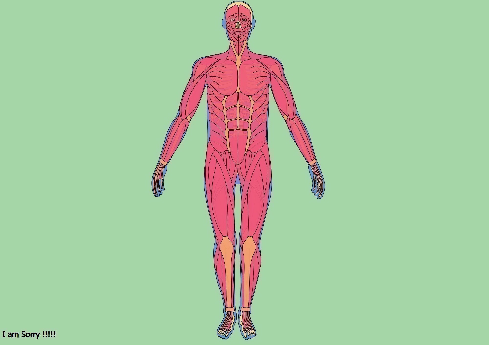
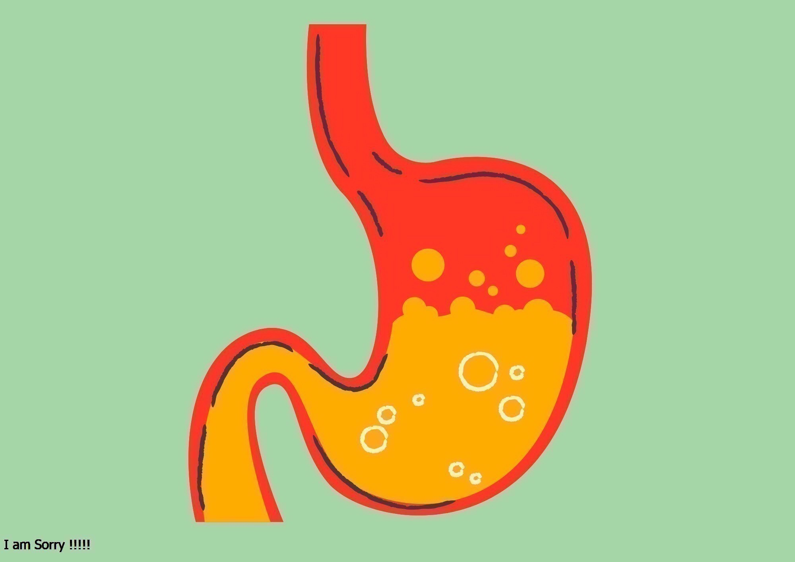
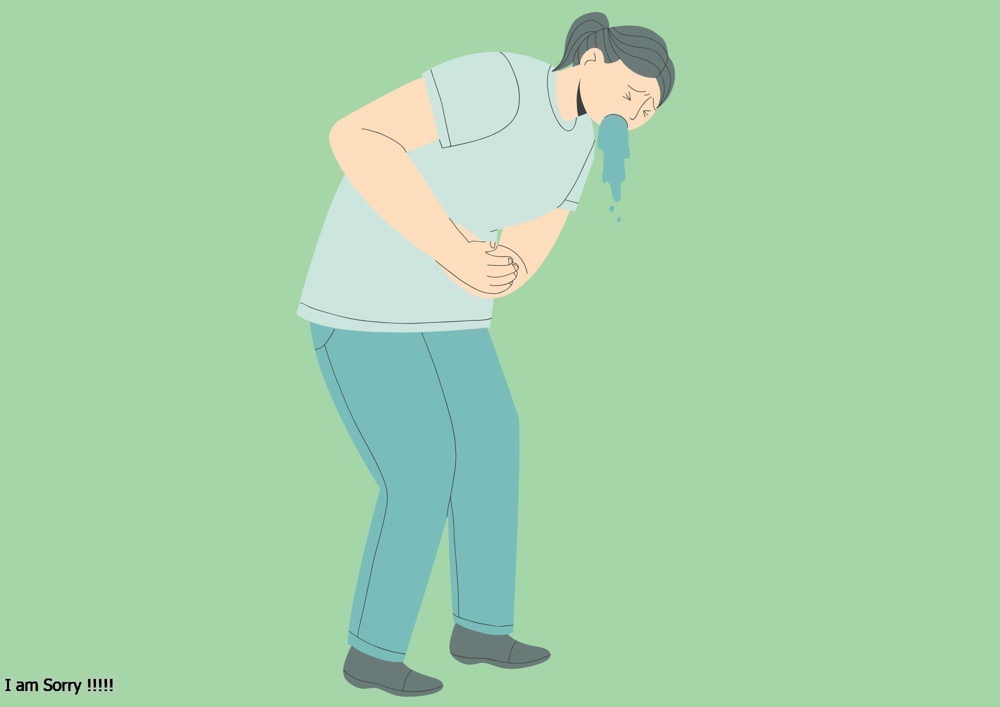
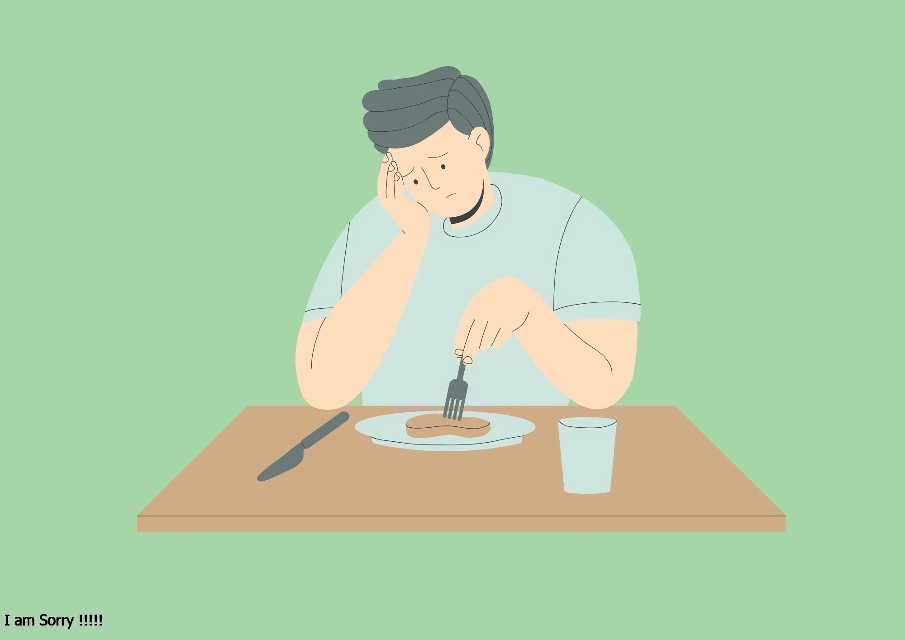
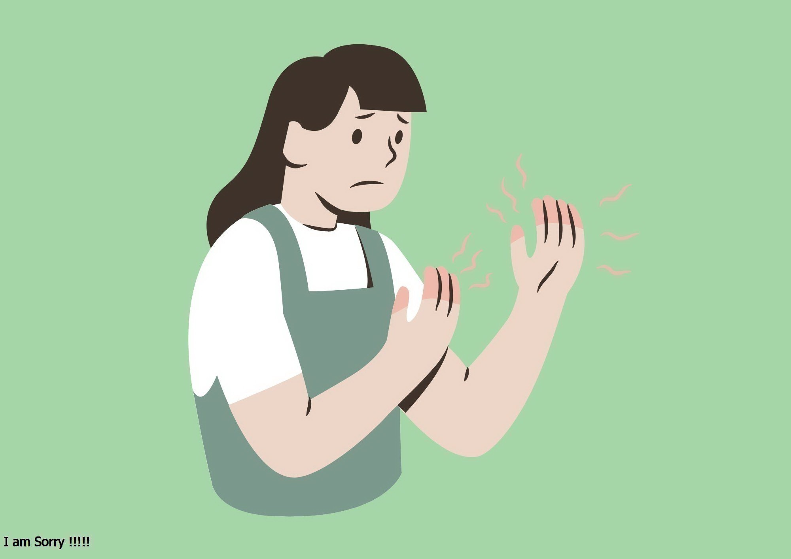
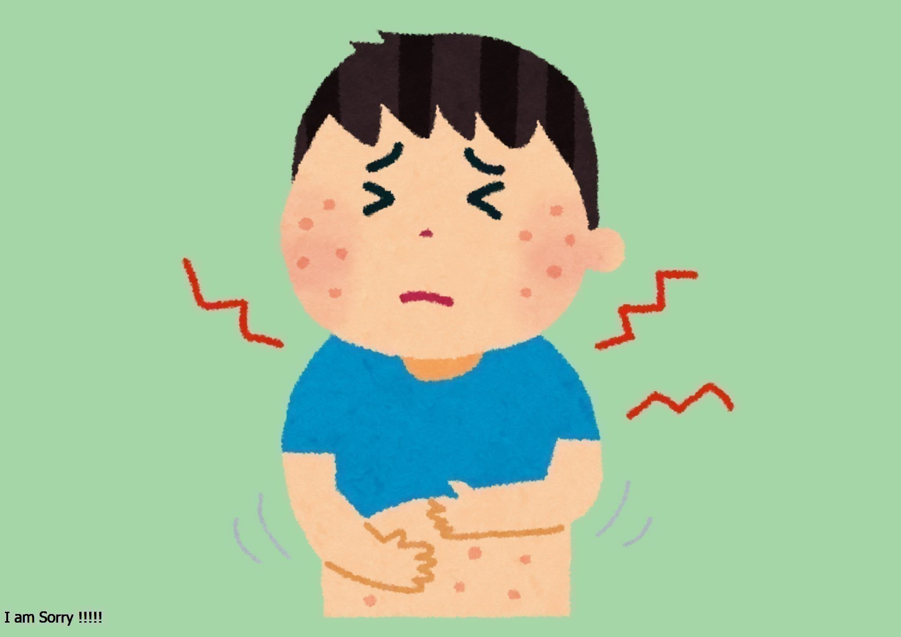

กลุ่ม Common Diseases ที่รักษาด้วยยาสมุนไพร

อาการปวดกล้ามเนื้อและปวดข้อ
อาการไข้หวัด ไอ เสมหะ โควิด 19

อาการท้องอืด/ท้องเฟ้อ
อาการท้องเสีย
อาการท้องผูก/ริดสีดวงทวารหนัก

อาการวิงเวียน/คลื่นไส้ อาเจียน
อาการนอนไม่หลับ

อาการเบื่ออาหาร

อาการชาจากอัมพฤกษ์-อัมพาต

อาการทางผิวหนัง/แผล